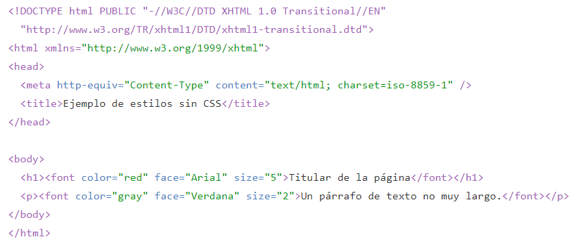

Funcionamiento básico de CSS
Antes de que se generalizara el uso de CSS, los diseñadores de páginas web utilizaban etiquetas HTML especiales para modificar el aspecto de los elementos de la página. El siguiente ejemplo muestra una página HTML con estilos definidos sin utilizar CSS:
El ejemplo anterior utiliza la etiqueta "font" con sus atributos color, face y size para definir el color, el tipo y el tamaño de letra de cada elemento de la página.
El problema de utilizar este método para definir el aspecto de los elementos se puede ver claramente con el siguiente ejemplo: si la página tuviera 50 elementos diferentes, habría que insertar 50 etiquetas "font". Si el sitio web entero se compone de 10.000 páginas diferentes, habría que definir 500.000 etiquetas "font". Como cada etiqueta "font" tiene tres atributos, habría que definir 1.5 millones de atributos.
Como el diseño de los sitios web está en constante evolución, es habitual modificar cada cierto tiempo el aspecto de las páginas del sitio. Siguiendo con el ejemplo anterior, cambiar el aspecto del sitio requeriría modificar 500.000 etiquetas y 1.5 millones de atributos.
CSS permite separar los contenidos de la página y la información sobre su aspecto. En el ejemplo anterior, dentro de la propia página HTML se crea una zona especial en la que se incluye toda la información relacionada con los estilos de la página.
Utilizando CSS, se pueden establecer los mismos estilos con menos esfuerzo y sin ensuciar el código HTML de los contenidos con etiquetas "font". Como se verá más adelante, la etiqueta "style crea una zona especial donde se incluyen todas las reglas CSS que se aplican en la página.
En el ejemplo anterior, dentro de la zona de CSS se indica que todas las etiquetas "h1" de la página se deben ver de color rojo, con un tipo de letra Arial y con un tamaño de letra grande. Además, las etiquetas "p"de la página se deben ver de color gris, con un tipo de letra Verdana y con un tamaño de letra medio.